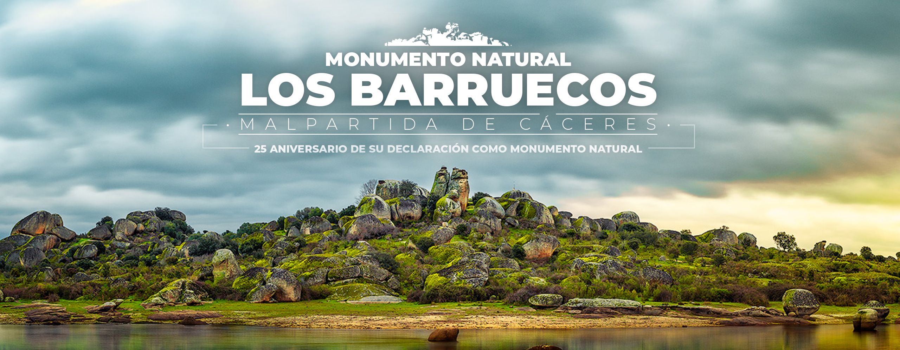

Escenario Juego de Tronos

Los Barruecos

La patatera
San Isidro
|
||||
| Municipio de España y pueblo | ||||
|
Vista general de la localidad. |

Ubicación de Malpartida de Cáceres en España |
|||
|
Ubicación de Malpartida de Cáceres en la provincia de Cáceres. |
Ver mapa |
|||
| Información general | ||||
| País | España | |||
| Com. autónoma | Extremadura | |||
| Provincia | Cáceres | |||
| Partido judicial | Cáceres | |||
| Mancomunidad | Tajo-Salor | |||
| Ubicación | 39°26′44″N 6°30′21″O | |||
| Superficie | 33,73 km² | |||
| Población | 4086 hab. (2023) | |||
| Gentilicio | malpartideño, -a | |||
| Código postal | 10910 | |||
| Alcalde (2024) | Alfredo Aguilera | |||